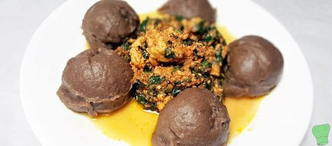

Amala with Egusi

Description
Ingredients
- Yam flour
- Meat
- Fish
- Palm oil
- Onion, Fresh pepper
- Shrimps, perewinkle, crayfish
- Stockfish
- Egusi (blended)
- Seasonings (salt and Maggi)
- Kpomo
- leaf Bitter
Steps
- Toast the Egusi melon in a hot pan on a medium to high heat until it begins to brown and pop but don’t get
it burnt. You will literarily perceive the ‘Nutty Aroma’ of the toasted melon once it’s done. Remove it from
heat and allow it to cool down.
- Blend the Egusi together with the Onion and about a Cup of stock then set it aside.
- Place the Palm Oil on the stove top, add the locust bean and stir-fry for a couple of seconds so that the
bean will release its flavor into the Oil.
- Add the sauce (see the link to the sauce above) and dissolve the Ogiri in the Sauce, then add some beef
stock, Crayfish and the Prawns stir this together.
- Turn the heat down to low, then add the blended Egusi and continue to stir so that the Egusi will not become
lumpy (you can add stock or Water if there is a need for it). When the stew is smooth and lump free, you can
now cover it up and increase the heat then allow it to cook for about 10 minutes or thereabout.
- Add Salt to taste and add the Beef as well and leave to cook for about 6 to 8 minutes or till you achieve
your desired consistency.
- Serve with your favorite swallow, Rice, Yam…Enjoy!